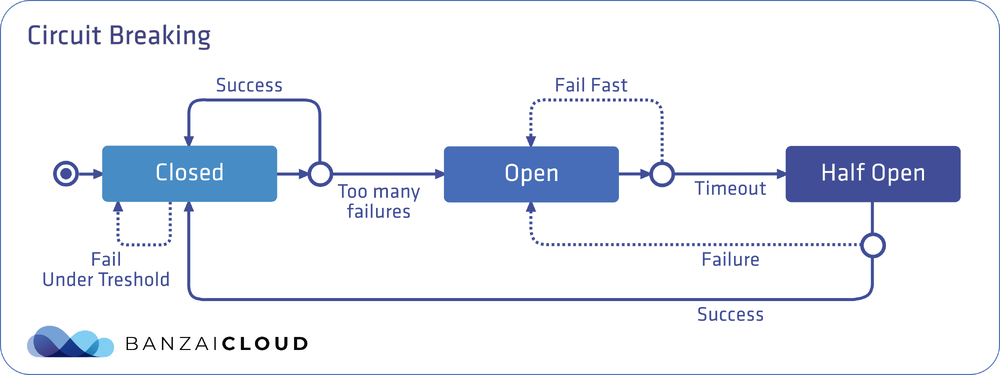
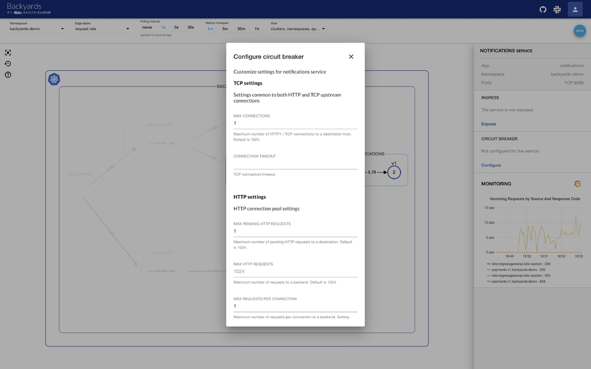
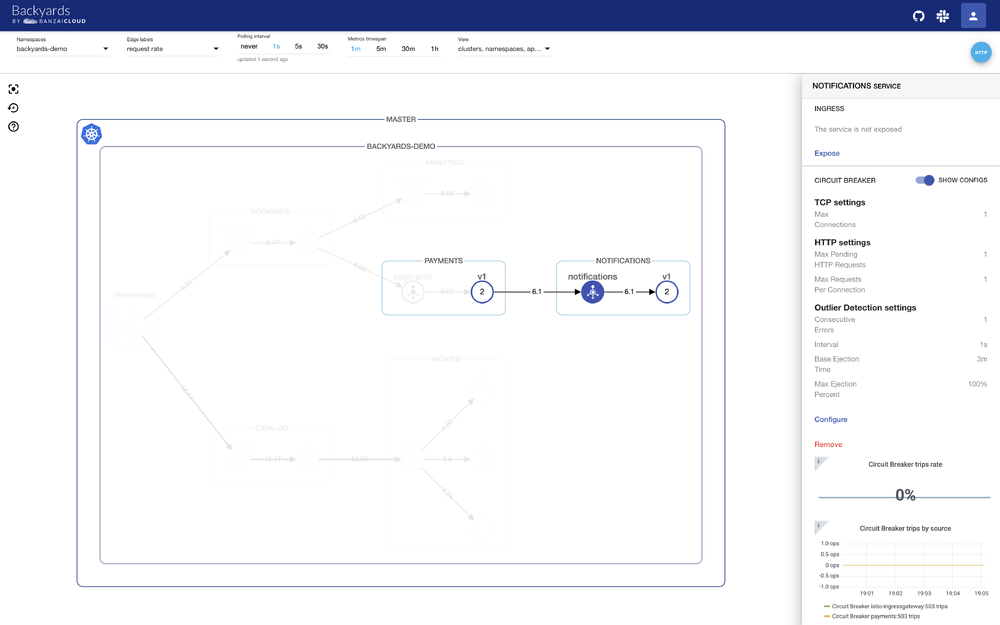
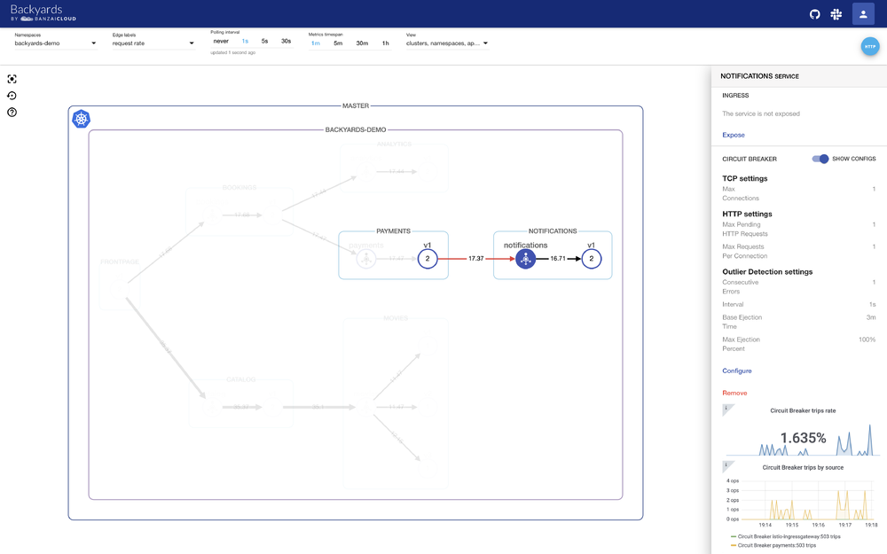
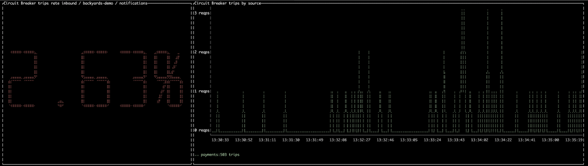

本文为翻译文章，点击查看原文。
编者按
作者简要介绍了熔断的概念，然后以实战演练的方式分别演示了如何通过Backyards UI、CLI等方式创建并设置熔断功能。注：Backyards是Banzai Cloud开发的一款基于Istio的服务网格产品，本文是该产品功能介绍系列中的一篇。
前言
Istio因灵活的可观察性和安全的服务间通信受到了赞许。然而，其他更重要的功能才真正使得Istio成为了服务网格里的瑞士军刀，当遇到运行时长、延迟和错误率等SLO问题时，服务间的流量管理能力是至关重要的。
在今年早些时候发布 Istio operator 时，我们的目标（除了管理Istio的安装和升级）是为这些出色的流量路由特性提供支持，同时使所有的功能都更加易用。最后，我们创建了一个简单且自动化的服务网格Backyards，它在Istio operator之上提供了管理UI、CLI 和GraphQL API的能力。Backyards集成到了Banzai Cloud的容器管理平台 Pipeline中，也可以作为一个单一的产品独立工作。当然，将Backyards与Pipeline一起使用会为用户提供特别的好处（比如在多云和混合云环境中管理应用程序），Backyards也可以被用于任何Kubernetes的安装环境。
我们已经发布了一些Backyards相关特性的文章比如：
熔断：失败是一个选项
在微服务架构中，服务可能会用不同的语言实现并部署在多个节点或集群上，具有不同的响应时间或故障率。如果服务成功（并且及时地）响应了请求，那么它的性能就算是令人满意的。但现实情况并非如此，下游客户端应该在上游服务过于缓慢时受到保护。反之，上游服务也必须被保护，以免被积压的请求拖垮。在多客户端下情况会更加复杂，并可能导致整个基础设施出现一系列的连锁故障。这一问题的解决方案是采用经过时间检验的熔断器模式。
一个熔断器可以有三种状态：关闭、打开和半开，默认情况下处于关闭状态。在关闭状态下，无论请求成功或失败，到达预先设定的故障数量阈值前，都不会触发熔断。而当达到阈值时，熔断器就会打开。当调用处于打开状态的服务时，熔断器将断开请求，这意味着它会直接返回一个错误，而不去执行调用。通过在客户端断开下游请求的方式，可以在生产环境中防止级联故障的发生。在经过事先配置的超时时长后，熔断器进入半开状态，这种状态下故障服务有时间从其中断的行为中恢复。如果请求在这种状态下继续失败，则熔断器将再次打开并继续阻断请求。否则熔断器将关闭，服务将被允许再次处理请求。

Istio中的熔断
Istio的 熔断 可以在 流量策略 中配置。Istio的 自定义资源Destination Rule里，TrafficPolicy字段下有两个和熔断相关的配置： ConnectionPoolSettings 和 OutlierDetection。
ConnectionPoolSettings可以为服务配置连接的数量。OutlierDetection用来控制从负载均衡池中剔除不健康的实例。
例如，ConnectionPoolSettings控制请求的最大数量，挂起请求，重试或者超时；OutlierDetection 设置服务被从连接池剔除时发生错误的请求数，可以设置最小逐出时间和最大逐出百分比。有关完整的字段列表，请参考文档.
Istio在底层使用了Envoy的熔断特性。
让我们来看看Destination Rule中有关熔断的配置：
apiVersion: networking.istio.io/v1alpha3
kind: DestinationRule
metadata:
name: notifications
spec:
host: notifications
trafficPolicy:
connectionPool:
tcp:
maxConnections: 1
http:
http1MaxPendingRequests: 1
maxRequestsPerConnection: 1
outlierDetection:
consecutiveErrors: 1
interval: 1s
baseEjectionTime: 3m
maxEjectionPercent: 100
使用ConnectionPoolSettings字段中的这些设置，在给定的时间内只能和notifications 服务建立一个连接：每个连接最多只能有一个挂起的请求。如果达到阈值，熔断器将开始阻断请求。
OutlierDetection部分的设置用来检查每秒调用服务是否有错误发生。如果有，则将服务从负载均衡池中逐出至少三分钟（100%最大弹出百分比表示，如果需要，所有的服务实例都可以同时被逐出）。
在手动创建
Destination Rule资源时有一件事需要特别注意，那就是是否为该服务启用了mTLS。如果是的话，还需要在Destination Rule中设置如下字段，否则当调用movies服务时，调用方可能会收到503错误：
trafficPolicy:
tls:
mode: ISTIO_MUTUAL
还可以为特定namespace 或特定服务启用全局的mTLS。你应该了解这些设置以便确定是否把
trafficPolicy.tls.mode设置为ISTIO_MUTUAL。更重要的是，当你试图配置一个完全不同的功能（例如熔断）时，很容易忘记设置此字段。提示：在创建
Destination Rule前总是考虑mTLS！
为了触发熔断，让我们同时从两个连接来调用 notifications服务。maxConnections字段被设置为1。这时应该会看到503与200的响应同时到达。
当一个服务从客户端接收到的负载大于它所能处理的负载（如熔断器中配置的那样），它会在调用之前返回503错误。这是防止错误级联的一种方法。
监控
在生产环境中必须要监控你的服务，以便得到通知并能够在系统发生错误时进行检查。因此，如果你已经为你的服务配置了一个熔断器，你就会想知道它什么时候跳闸；熔断器拦截了百分之多少的请求；何时触发，来自哪个下游客户端？如果能够回答这些问题，你就可以确定熔断器是否工作正常，并根据需要微调配置，或者优化服务来处理额外的并发请求。
提示：如果你继续阅读，可以在Backyards UI中看到和配置所有的这些设置。
让我们看看怎样在Istio里确定熔断器跳闸：
熔断器跳闸时的响应码是503，因此你无法仅根据该响应与其他的503错误区分开来。在Envoy中，有一个计数器叫upstream_rq_pending_overflow，它记录了熔断且失败的请求总数。如果为你的服务深入研究Envoy的统计数据就可以获得这些信息，但这并不容易。
除了响应代码，Envoy还返回响应标志 ，并且存在一个专用响应标志来表示熔断器跳闸：UO。如果这个标志只能通过Envoy的日志获得，这将不会特别有用。幸运的是，它在Istio中实现了，因此响应标志在Istio指标中是可用的并且能被Prometheus获取到。
熔断器的跳闸可以像这样查询到：
sum(istio_requests_total{response_code="503", response_flags="UO"}) by (source_workload, destination_workload, response_code)
Backyards的熔断更简单
使用Backyards时，你不需要手动编辑Destination Rules来设置熔断。可以通过一个方便的UI界面或者（如果你愿意的话）是Backyards CLI 命令行工具来达到相同的结果。
不必担心由于忘记把trafficPolicy.tls.mode 设置为 ISTIO_MUTUAL而配错了Destination Rules。Backyards会为你解决这个问题；它会找到启用了mTLS的服务并相应地设置上述字段。
上面只是Backyards验证特性的一个例子，这能避免你设置错误。后面还有更多的特性。
在此之上，你可以看到服务和请求的可视化界面和活动仪表板，因此可以轻松地确定有多少请求被熔断器触发，以及它来自哪个调用者和何时触发。
熔断实战
创建一个集群
首先，我们需要一个Kubernetes集群。
我通过Pipeline platform的免费开发版本在GKE上创建了一个Kubernetes集群。如果你也想这样做，可以在我们支持的五个云提供商或使用Pipeline在本地创建集群。否则，你需要提供自己的Kubernetes集群。
安装BACKYARDS
在一个新集群安装Istio，Backyards和demo应用的最简单的办法是使用Backyards CLI。
你只需要执行下面的命令（集群必须设置了KUBECONFIG）：
$ backyards install -a --run-demo
该命令首先使用我们开源的Istio operator安装Istio，然后安装Backyards和demo应用程序。安装完成后，Backyards UI将自动打开并向demo应用发送一些流量。通过这个简单的命令，你可以看到Backyards在几分钟内启动了一个全新的Istio集群！试试吧！
你也可以按顺序执行所有这些步骤。Backyards需要一个Istio集群——如果没有，可以通过
$ backyards istio install安装。一旦安装了Istio，就可以使用$ backyards install安装Backyards。最后，使用$ backyards demoapp install部署demo应用程序。
使用BACKYARDS UI创建熔断
配置熔断器
你不需要手动创建或编辑Destination Rule，可以很容易的在UI界面中改变熔断的配置。让我们先创建一个demo。
正如你将看到的，Backyards（与Kiali相比）不仅是为可观察性构建的web UI，而且是具有丰富功能的服务网格管理工具，支持单集群和多集群，并且具有强大的CLI和GraphQL API。

查看熔断器设置
你不需要通过Destination Rule（例如通过kubectl）来查看熔断器的配置，当你点击notification 服务图标并切换SHOW CONFIGS滑块时，可以在Backyards UI的右侧看到它们。

监控熔断器
根据刚才的设置，当两个连接同时产生流量时，熔断器将发出跳闸请求。在Backyards UI中，你将看到图形的边缘出现了红色。如果单击该服务，你将了解有关错误的更多信息，并将看到两个专门用来显示熔断器跳闸的实时Grafana仪表板。
第一个仪表板展示了熔断器触发的总请求的百分比。当没有熔断器错误，而你的服务工作正常，这张图将显示0%。否则，你将能够立即看到有多少请求被熔断器触发。
第二个仪表板提供了由源熔断器引起的跳闸故障。如果没有发生跳闸，则此图中不会出现尖峰。否则，你将看到哪个服务导致了跳闸，何时跳闸，以及跳闸次数。可以通过此图来追踪恶意的客户端。

这些是实时的Grafana仪表盘，用于显示熔断相关的信息。在默认情况下Backyards集成了Grafana和Prometheus——还有更多的仪表板可以帮助你深入查看服务的指标。
移除熔断器配置
可以通过 Remove 按钮很容易的移除熔断配置。
Backyards UI 的熔断实战
这个视频总结了所有这些UI操作（译者注：视频来自YouTube）
使用BACKYARDS-CLI创建熔断
从经验来看，可以从UI界面做的事一定也可以通过 Backyards CLI 命令行工具完成。
配置熔断
让我们再做一次创建熔断的测试，这次通过CLI命令行。
可以以交互模式进行：
$ backyards r cb set backyards-demo/notifications
? Maximum number of HTTP1/TCP connections 1
? TCP connection timeout 3s
? Maximum number of pending HTTP requests 1
? Maximum number of requests 1024
? Maximum number of requests per connection 1
? Maximum number of retries 1024
? Number of errors before a host is ejected 1
? Time interval between ejection sweep analysis 1s
? Minimum ejection duration 3m
? Maximum ejection percentage 100
INFO[0043] circuit breaker rules successfully applied to 'backyards-demo/notifications'
Connections Timeout Pending Requests Requests RPC Retries Errors Interval Ejection time percentage
1 3s 1 1024 1 1024 1 1s 3m 100
或者用非交互模式，指定要设置的值：
$ backyards r cb set backyards-demo/notifications --non-interactive --max-connections=1 --max-pending-requests=1 --max-requests-per-connection=1 --consecutiveErrors=1 --interval=1s --baseEjectionTime=3m --maxEjectionPercent=100
Connections Timeout Pending Requests Requests RPC Retries Errors Interval Ejection time percentage
1 3s 1 1024 1 1024 5 1s 3m 100
命令执行后，熔断配置会立刻获取到并显示出来。
查看熔断设置
你可以用下面的命令通过namespace来列出熔断的设置：
$ backyards r cb get backyards-demo/notifications
Connections Timeout Pending Requests Requests RPC Retries Errors Interval Ejection time percentage
1 3s 1 1024 1 1024 5 1s 3m 100
默认情况结果以表格的方式显示，也支持JSON或者YMAL格式：
$ backyards r cb get backyards-demo/notifications -o json
{
"maxConnections": 1,
"connectTimeout": "3s",
"http1MaxPendingRequests": 1,
"http2MaxRequests": 1024,
"maxRequestsPerConnection": 1,
"maxRetries": 1024,
"consecutiveErrors": 5,
"interval": "1s",
"baseEjectionTime": "3m",
"maxEjectionPercent": 100
}
$ backyards r cb get backyards-demo/notifications -o yaml
maxConnections: 1
connectTimeout: 3s
http1MaxPendingRequests: 1
http2MaxRequests: 1024
maxRequestsPerConnection: 1
maxRetries: 1024
consecutiveErrors: 5
interval: 1s
baseEjectionTime: 3m
maxEjectionPercent: 100
监控熔断
要从CLI中查看和前面Grafana UI界面类似的仪表板，可以通过从多个连接调用服务来触发跳闸，执行命令：
$ backyards r cb graph backyards-demo/notifications
可以看到类似下面的结果：

移除熔断配置
移除熔断执行下面的命令：
$ backyards r cb delete backyards-demo/notifications
INFO[0000] current settings
Connections Timeout Pending Requests Requests RPC Retries Errors Interval Ejection time percentage
1 3s 1 1024 1 1024 5 1s 3m 100
? Do you want to DELETE the circuit breaker rules? Yes
INFO[0008] circuit breaker rules set to backyards-demo/notifications successfully deleted
使用下面的命令验证是否成功：
$ backyards r cb get backyards-demo/notifications
INFO[0001] no circuit breaker rules set for backyards-demo/notifications
使用BACKYARDS GRAPHQL API创建熔断
Backyards由多个组件组成，比如Istio、Banzai Cloud的Istio operator，多集群Canary release operator，以及多个后端基础设施。所有的这些都在Backyards’ GraphQL API的后面。
Backyards UI和CLI都使用Backyards的GraphQL API，它将在9月底与GA版本一起发布。用户将很快能够使用我们的工具来管理Istio和构建他们自己的客户端。
清理
从你的集群移除demo应用、Backyards和Istio，执行下面的命令，它将按顺序卸载这些组件：
$ backyards uninstall -a
总结
使用Backyards，你可以通过UI或CLI命令行工具轻松的配置熔断器。然后通过嵌入的Grafana仪表板从Backyards UI实时的监控熔断器，来查看跳闸率和按源计算的跳闸次数。
下一次我们将介绍错误注入，请继续关注！